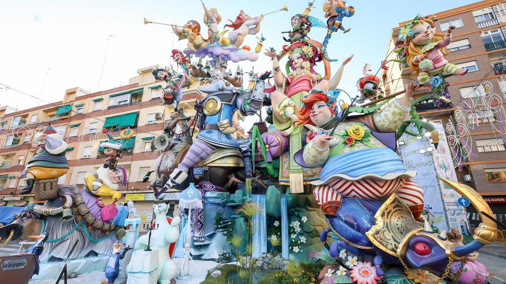

Menú
Usa esta columna para moverte por la web!!
Galería de imágenes


Mapa de Valencia
10 Cosas que ver en Valencia
Últimas noticias
Recuperación del turismo tras la DANA:
El director de Visit Valencia, Tono Franco, ha expresado su optimismo sobre la recuperación del turismo en la ciudad tras la devastadora DANA que afectó a la región. El enfoque está en recuperar las cifras turísticas previas a la catástrofe y en promover un crecimiento sostenible que beneficie a la ciudad1.
Además, se ha lanzado la campaña "Verte en Valencia nos alegra el corazón" para atraer a turistas comprometidos con la sostenibilidad.
Kioscos digitales de información turística:
Kioscos digitales de información turística: El Ayuntamiento de Valencia ha decidido instalar kioscos digitales en puntos estratégicos de la ciudad, como oficinas de turismo, estaciones de tren y el aeropuerto.
Estos kioscos permitirán a los turistas acceder a información en tiempo real, adquirir productos turísticos y disfrutar de una experiencia "phygital" que combina el mundo físico con el digital2.
Valencia celebra Las Fallas 2025:
La ciudad de Valencia ya vive la atmósfera de Las Fallas 2025, una festividad declarada Patrimonio Cultural Inmaterial de la Humanidad y considerada uno de los eventos más representativos de la cultura valenciana.
Este año, se espera una gran afluencia de turistas para disfrutar de las tradicionales "fallas" y disfrutar de la cultura local.